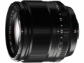

器材库 > APS画幅镜头 > XF 56/1.2 R

详细规格
镜头类型
中远摄/远摄镜头
发布日期
2014-01-06
焦距
56mm
等效35mm画幅焦距
85mm
最大光圈
f/1.2
最小光圈
f/16
视角（对角）
28.5°
镜头结构
11片/8组
非球面镜片
1片
低/超低色散镜片
2片
光圈叶片
7片
最近对焦距离
70cm
最大放大倍率
0.09倍
滤镜口径
62mm
镜头卡口
Fujifilm XF
防抖
是
颜色
黑色
尺寸
73.2×69.7mm
重量
405g
水柔2015-01-14 14:324.42 分
操作性 4.50耐用性 4.50性价比 3.00解像力 5.00色彩还原 5.00机械结构 4.50
花落花无常2015-01-10 22:144.5 分
操作性 4.50耐用性 4.50性价比 4.00解像力 4.50色彩还原 4.50机械结构 5.00
两只猫的抒情歌2014-09-03 09:584.75 分
操作性 4.50耐用性 4.50性价比 5.00解像力 5.00色彩还原 5.00机械结构 4.50
产品图 / 样片
XF 56/1.2 R